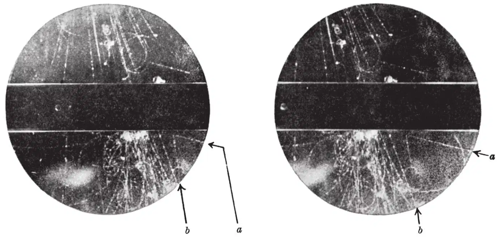
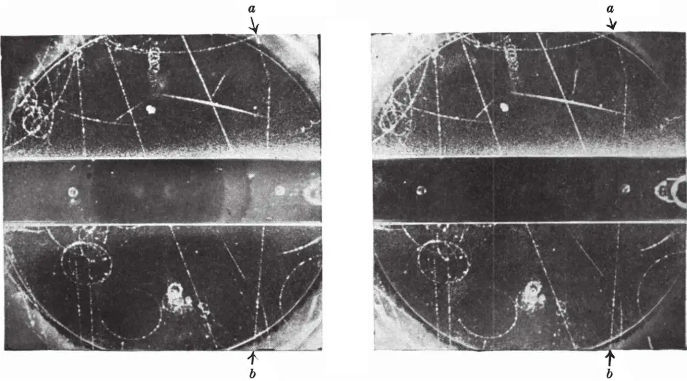
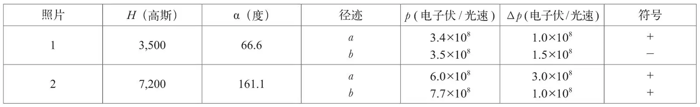
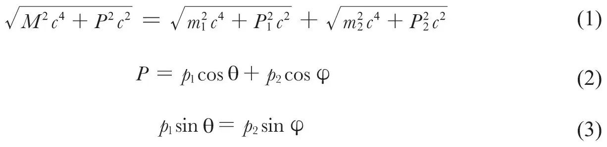
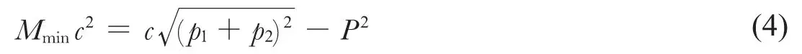
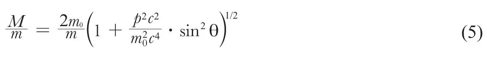
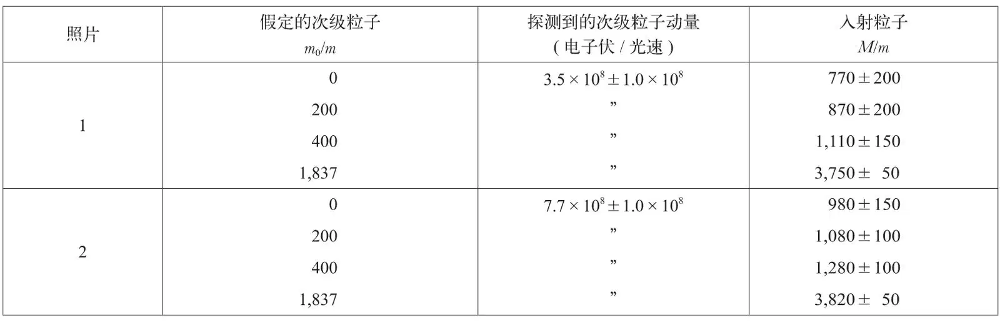
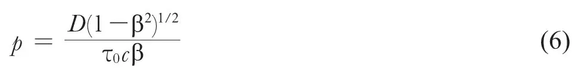

英文
英文罗切斯特，布特勒
编者按
到1947年，物理学家们已经知道正电子和中微子，并刚刚发现了中性介子。除了关于µ介子存在一些小争议外，一个关于粒子园的令人满意的图景似乎已经成形了；但是在本文中物理学家乔治·罗切斯特和克利福德·布特勒报道了一种未知重粒子存在的证据，令人震惊。他们分析了穿透云室的高能粒子的照片，并在其中两张照片中注意到V形径迹，这显然表明一个有质量的入射粒子自发衰变为另外两种粒子。后来证实这些衰变过程与两种新粒子有关，分别是θ粒子和τ粒子，而它们仅仅是后来几十年中发现的大量新粒子中的两种。 英文
在过去的一年中，我们得到了约50张由计数器控制的贯穿簇射的云室照片，这些射线流是在对宇宙射线辐射铅板时，穿透铅板的粒子，照片是在研究穿透粒子的自然特征的实验中得到的，其中有两张具有显著的叉状特征。这些照片是从经过1,500个小时的有效工作时间中拍摄得到的5,000张照片中筛选出来的。在以下分析的基础上，我们相信其中图1中的一条叉状径迹（a、b径迹）代表了云室气体中的自发转变过程：一种新的不带电的基本粒子转化为更轻的带电粒子。而图2中的另一条径迹（a、b径迹）代表了相似的转变过程：一种新的带电粒子转化为两种轻粒子，其中一种粒子带电，另一种粒子不带电。 英文

图1．立体照片显示了云室气体中一条不同寻常的叉状径迹（a b）。磁场的方向使得向下运动带正电的粒子沿着逆时针方向发生偏转。 英文

图2．立体照片显示了云室气体中一个不同寻常的叉状径迹（a b）。磁场的方向使得向下运动带正电的粒子沿着顺时针方向发生偏转。 英文
这两条叉状径迹的实验数据如表1所示。H为磁场的强度值，α为叉状径迹的夹角，p和Δp为动量的测量值和估计的误差值。在表格的最后一列给出这些粒子的符号，其中正号表示如果粒子穿过云室向下运动，则粒子带正电。对立体照片进行细致的重新投影发现，每一对径迹都是共点的。而且，每对中的两条径迹均出现在具有相同亮度的云室的中间区域，径迹周围雾化背景的存在表示该情况具有良好的凝聚状态。 英文
表1. 实验数据

尽管这两条叉状径迹在很多重要的方面是不一样的，但它们具有至少两个相同的基本特征：第一，每一个都由两条叉状径迹组成，且尖端在气体中；第二，没有任何迹象表明任何一条径迹的符号是由第三个离子化的粒子引起的。另外，在3厘米厚的铅板的观测实验中几乎没有出现与这种叉状径迹相类似的情况。然而，如果叉状径迹是由任何一种类型的碰撞过程产生的，则预期在气体中能探测到的分叉应多几百倍。因此，以上讨论表明，这些径迹并不是由碰撞过程产生的，而是由某种自发过程引起的，而这种过程发生的概率依赖于粒子走过的路程而不是横向穿过粒子的数量。 英文
下面更细节的讨论将支持以上的结论。例如，如果叉状径迹的任意一支是由于带电粒子与核粒子碰撞发生偏转而产生的，动量的转移将足以产生一个清晰易辨的反冲径迹。这时，试图用碰撞过程来解释图2再次遇到了困难，即入射粒子在气体中的单个碰撞过程中偏离了19°，而在穿透3厘米铅板的过程中仅偏离了2.4°，这几乎是不可能的。基于以下两点考虑，我们可以排除在核子场中由高能光子产生电子对这种特有的碰撞过程：被观测到的叉状径迹之间的角度仅仅是1度的几分之一，例如图1中叉状径迹的角度只有0.1°；而且，在每次实验中铅板紧挨着叉状径迹的上方都应该有大量的电子伴随着光子出现，但事实上却没有发现大量电子的出现。 英文
因此，我们得出结论：这两条叉状径迹与碰撞过程无关，而是由自发转变过程产生的。它们代表了我们已经熟悉的介子衰变成电子和一种假定的中微子的过程，而且，最近拉特斯、奥恰利尼和鲍威尔[1]已经观测到这种假想的重介子的衰变过程。 英文
入射粒子的质量
让我们假定质量为M、初始动量为P的一个粒子自发转化为两个粒子，这两个粒子的质量分别为m1和m2，动量分别为p1和p2，与入射粒子的夹角分别为θ和φ，则该过程应该满足以下关系式：

这些普适的关系式可以用来求解入射粒子的质量，求得的解为假定的次级粒子质量的函数。 英文
假设次级粒子的静止质量相对于其动量来说很小，则真实的M值大小应该比在该假设极限情况下得到的解要大，因此M的最小值Mmin可由下面的公式给出：

通过测得的p1和p2值计算得出P之后，将以上公式用于求解图1中的叉状径迹，计算得到Mmin为（770±200）m，其中m为电子的质量。然而由观测得到的P和p1值得出p2后，将等式（4）用于求解图2中的叉状径迹，计算得到Mmin=（1,700±150）m。这一质量值将对应于质量为两倍质量最小值的入射粒子发生电离，这与观测到的电离情况不一致。因此，我们有理由认为动量P的真实值大于测量值，正如表1中给出的那样，存在很大的误差。如果假定动量P的值更大，则Mmin将会减小。如果P为14.5×108电子伏/光速，则Mmin的最小值为（980±150）m。当动量P超过这一值后，入射粒子的质量随着动量的增加而缓慢地增加。无论动量取何值，入射粒子的质量都不会低于980m。 英文
在一个入射粒子分解为两个质量均为m0的粒子的特定过程中，产生了一个对称的叉状径迹，而等式（1）将简化成以下表达式：

式中p为每个次级粒子的动量。对于不同的假定的次级粒子，由等式（5）计算得到的特定结果如表2所示。在次级粒子分别为质量200m的轻介子或质量400m的重介子的合理假定下，我们发现，每一张照片中入射粒子的质量都在1,000m的量级上。 英文
表2. 入射粒子质量与次级粒子质量的函数关系

上表中入射粒子的质量值也可以通过电离值和动量值计算得到。因此对于图1中观测到的每一种粒子，其电离情况与快粒子的电离情况是难以辨别的。因此，我们得出结论β=v/c≥0.7。既然入射粒子的动量可以由探测到的次级粒子的动量得出，我们就可以用公式（1）计算得出入射粒子的质量M。按这种方法分析，我们得到M/m≤1,600。此外，由于图2中入射粒子的电离结果是轻粒子，β≥0.7，由此得到M/m≤1,200。然而，我们必须谨慎处理最后的结果，因为入射粒子动量的测量值具有不确定性。 英文
下面进行更深一步的全面讨论。即在这种少量的贯穿簇射中观测到的两个自发衰变表明，不稳定粒子的寿命要比普通介子的寿命短得多。下面的推导中将给出这个寿命的近似值。寿命为τ0的不稳定粒子在短距离D范围内发生衰变的概率为：

目前为止探测到的贯穿簇射中贯穿粒子的总数量小于50，我们必须假设这种新的不稳定粒子的数目不可能大于50。由于观测发现每一种类型的粒子中都有一个粒子发生衰变，因此我们可以令p ≈ 0.02。取D ≈ 30厘米以及β = 0.7，通过等式（6）我们可以得出τ0 = 5.0×10–8秒。 英文
下面我们将讨论这两种叉状径迹另一种可能的解释。 英文
照片1 我们必须研究照片1所代表的另一种可能性：从云室的下方向上运动的带电粒子发生自发衰变，成为一个带电粒子和一个不带电粒子。如果我们将导出等式（4）的讨论应用到这一过程中，将会很容易地发现，入射粒子质量的最小值为1,280m。因此，不能用普通的背散射介子的衰变来解释这张照片。考虑到簇射中其他粒子的一般方向，我们认为一个中性粒子向下移动，转化为具有相同质量的一对粒子这种假定的可能性比较大。进一步讲，我们有理由认为探测到的电离粒子不可能是质子，因为动量为3.5×108电子伏/光速的质子发生电离的结果将是实际探测到的电离结果的四倍多。 英文
照片2 在这种情况中，我们必须研究照片所代表的一种可能性：来自云室右边的一个中性粒子自发衰变为两个带电粒子。在这一过程中应用等式（4）得到的结果表明，中性粒子质量的最小值大约为3,000m。鉴于实际情况为中性粒子的方向应该不同于簇射中大部分粒子的方向，因此认为一个带电粒子衰变为一个带电的贯穿粒子和一个中性粒子这种最初的假设可能性更大。 英文
通过所有的证据我们推断，照片1代表了一个质量介于770m和1,600m之间的中性粒子衰变为两个观测到的带电粒子的过程。类似的，照片2代表了质量大于980m但小于质子质量的带电粒子衰变为观测到的贯穿粒子和中性粒子的过程。这里还必须声明，目前我们还没有探测到质量为1,000m的中性粒子。然而，勒普兰斯–兰盖和莱里捷[2]已经探测到一个质量为990m±12%的带电粒子。 英文
由亚诺希、罗切斯特、布罗德本特[3]以及多丹[4]得到的特殊的云室照片可能是照片2中的其他情况。 英文
在这里感谢布莱克特教授对本项研究的极大关注及许多受益匪浅的讨论，感谢曼彻斯特大学理论物理学院罗森菲尔德教授、哈密顿先生和滋先生为我们提供的帮助，最后我们还要感谢朗科恩先生在本项研究工作的初期帮助我们操控云室。 英文
（胡雪兰 翻译；尚仁成 审稿）